Home / Past papers / MLP End Term / this paper
2023 Dec24: IIT M AN EXAM ADD4 - 24 Dec 2023
Elapsed 00:00
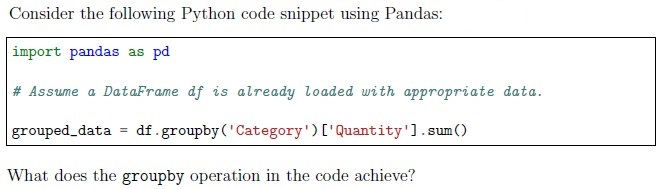
- It calculates the total quantity for each category.
- It calculates the average quantity for each category.
- It groups the data by the ’Category’ column.
- It filters out rows where the ’Quantity’ column is zero.
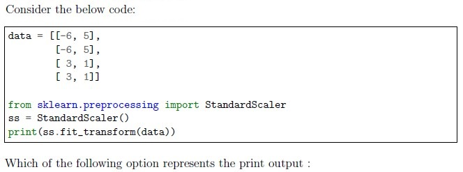
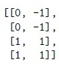
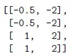
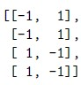
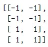
Consider the Ridge regression model in scikit-learn, represented by the Ridge class. Which of the following statements about Ridge regression is correct?
- Ridge regression is specifically designed for handling non-linear relationshipsin the data.
- The regularization term in Ridge regression is added to the sum of squaredresiduals.
- Increasing the value of the regularization parameter (alpha) in Ridgeregression tends to overfit the model.
- Ridge regression is equivalent to ElasticNet regression when the regularizationparameter (alpha) is set to one.

- Speeds up the process of finding neighbors on unscaled data.
- k-nearest neighbors relies on computing distances. Normalizing featuresensures that each feature contributes approximately equally to the distance computation.
- Scaling the data significantly improves the accuracy of k-nearest neighbormodels.
- It doesn’t matter. K-nearest neighbors works equally well with or withoutnormalizing the dataset.
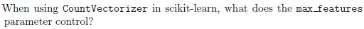
- The upper limit on the number of documents considered during vectorization.
- The maximum number of features (words) to be extracted based on termfrequency.
- The maximum number of randomly selected features (words).
- The upper limit on the number of characters allowed in each document.
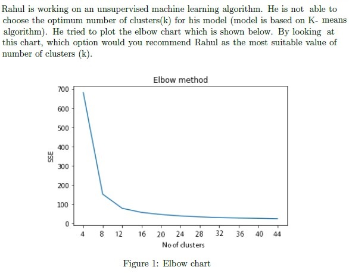
- 4
- 8
- 12
- 40
- 44
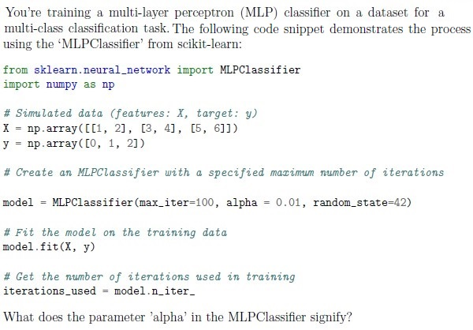
- It determines the maximum fraction of neurons to be used to train the model
- It is the learning rate
- It is the L1 regularization rate.
- It is the L2 regularization rate.
- None of these
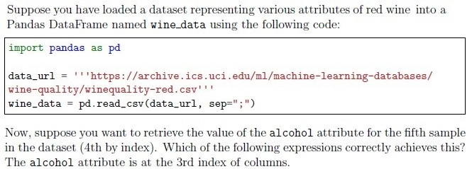
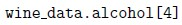
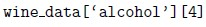
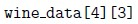
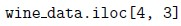
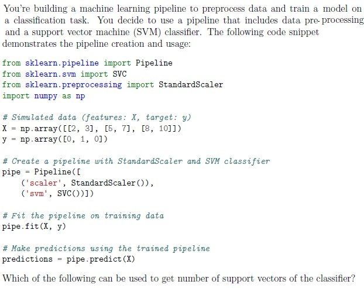
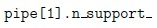
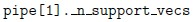
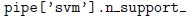
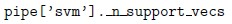
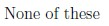

- The classifier is based on perceptron model.
- The classifier is based on logistic regression model.
- The learning rate decays every iteration.
- The learning rate is 0.0001.
- It will run exactly for 1000 iterations, which is independent of the data.
- None of these.
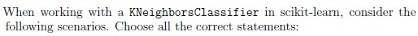
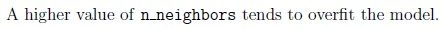
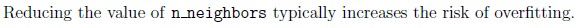
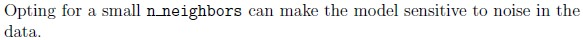
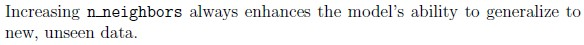
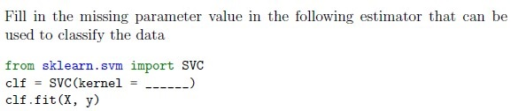
- ‘lasso’
- ‘poly’
- ‘scale’
- ‘rbf’
Which of the following are true about multilayer perceptron model in sklearn?
- It is an iterative algorithm/model.
- It can be used to capture non-linear relationships between features and labels.
- It can be used for regression as well as classification.
- It can be used for clustering.
- None of these
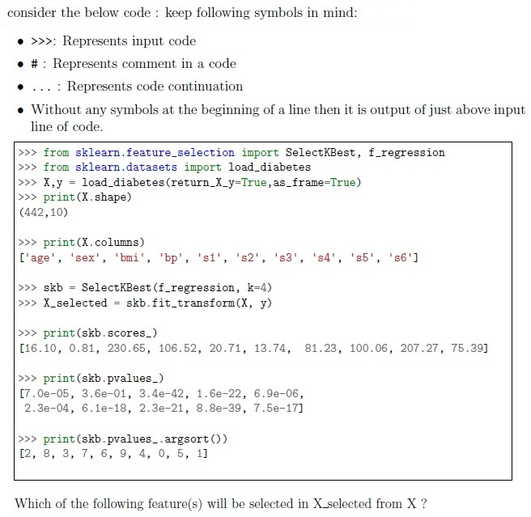
- age
- bmi
- bp
- s3
- s4
- s5
You’ve built a linear regression model to predict the temperature of a particular place 5 days from today, based on today’s humidity and wind speed. The model’s coefficients for the features are as follows: - Coefficient for humidity: +2.4 - Coefficient for wind speed: −2 What does the coefficient for ”wind speed” (5000) represent in this context?
- For each additional unit of increase in wind speed, the temperature isexpected to decrease by 2 units.
- For each additional unit of increase in wind speed, the temperature isexpected to increase by 2 units.
- Humidity has a stronger impact on salary than years of experience.
- The coefficient doesn’t have any meaningful interpretation in this scenario.
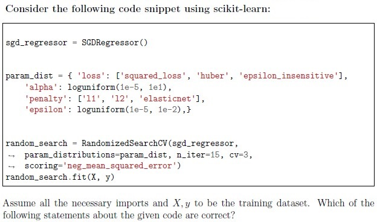
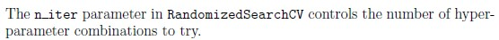
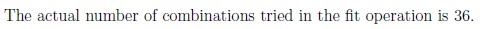
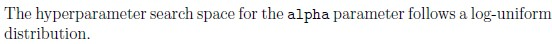
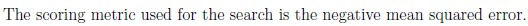
Which of the following estimators are exactly same?
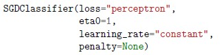
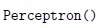
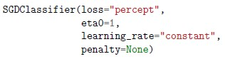
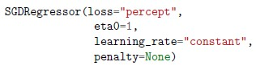
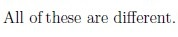
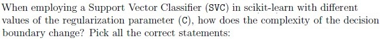
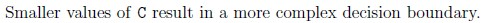
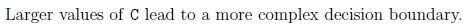
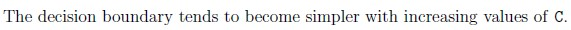
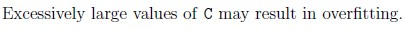
Choose the correct statements.
- Hierarchical agglomerative clustering does not need the initial number ofclusters to group the data.
- K-means clustering does not need the number of clusters to group the data.
- K-means clustering can be agglomerative or divisive.
- Hierarchical clustering can be agglomerative or divisive.
- None of these
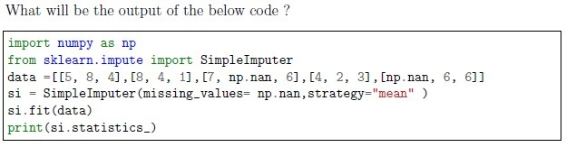
- [6,5,3.75]
- [5,5,3]
- [6,5,4]
- [5,5,5]
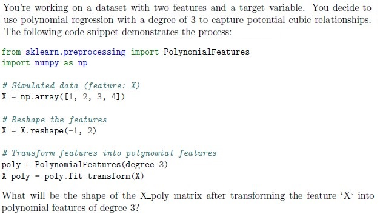
- (2, 10)
- (2, 11)
- (2, 9)
- (2, 8)
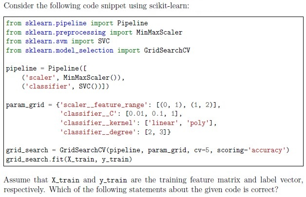
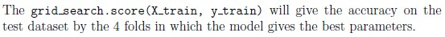
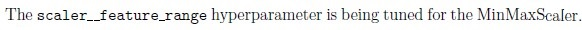
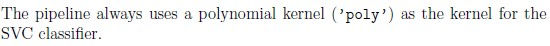
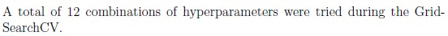
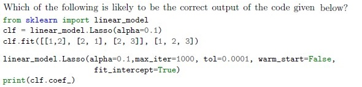
- [0.85,0.1,0.05]
- [1.05 0.35]
- [3,2,1]
- There are some mistakes in the 3rd /4th line of code, hence it will produceerror.
- dtc1
- dtc2
- dtc3
- dtc4
- 0
- 1
- 5
- 10
- None of these
- Number of samples at node N = 10. If it is split, it will result in 5 nodes in theleft child and 5 nodes in the right child.
- Number of samples at node N = 5. If it is split, it will result in 2 nodes in the leftchild and 3 nodes in the right child.
- Number of samples at node N = 12. If it is split, it will result in 5 nodes in theleft child and 7 nodes in the right child.
- Number of samples at node N = 4. If it is split, it will result in 3 nodes in the leftchild and 1 node in the right child.
- 0
- 1
- 2
- 3
Comprehension passage - the questions below it refer to this
Based on the above data, answer the given subquestions.

Predict number of Accidents per 1000 Driver to happen for Age 28 and driving red car ?
To improve the given Linear Regression model which of the following preprocessing step you suggest?
- OrdinalEncoder()
- DecisionTree()
- LabelEncoder()
- StandardScaler()
Comprehension passage - the questions below it refer to this
Based on the above data, answer the given subquestions.
- [1 1 0 1 0]
- [0 0 0 1 0]
- [0 1 0 0 0]
- [0 1 0 1 0]
Answer key
- Q1 (MCQ, 2 marks): A
- Q2 (MCQ, 2 marks): C
- Q3 (MCQ, 2 marks): B
- Q4 (MCQ, 2 marks): B
- Q5 (MCQ, 2 marks): B
- Q6 (MCQ, 2 marks): C
- Q7 (MCQ, 2 marks): D
- Q8 (MSQ, 2 marks): A, B, D
- Q9 (MSQ, 2 marks): A, C
- Q10 (MSQ, 2 marks): B, C
- Q11 (MSQ, 2 marks): B, C
- Q12 (MSQ, 2 marks): B, D
- Q13 (MSQ, 2 marks): A, B, C
- Q14 (MSQ, 3 marks): B, C, E, F
- Q15 (MSQ, 3 marks): A, C
- Q16 (MSQ, 3 marks): A, C, D
- Q17 (MSQ, 3 marks): A, B
- Q18 (MSQ, 3 marks): B, D
- Q19 (MSQ, 3 marks): A, C
- Q20 (MCQ, 3 marks): C
- Q21 (MCQ, 3 marks): A
- Q22 (MCQ, 3 marks): B
- Q23 (MCQ, 3 marks): B
- Q24 (MCQ, 3 marks): A
- Q25 (MCQ, 3 marks): A
- Q26 (SA, 3 marks): 0.7
- Q27 (SA, 3 marks): 2
- Q28 (SA, 3 marks): 250
- Q29 (SA, 2 marks): 3
- Q30 (MSQ, 4 marks): B, D
- Q31 (MCQ, 4 marks): A
- Q32 (MCQ, 4 marks): C
- Q33 (SA, 4 marks): 19
- Q34 (SA, 3 marks): 91 to 93
- Q35 (MCQ, 2 marks): D
- Q36 (MCQ, 3 marks): D
- Q37 (SA, 3 marks): 0.78 to 0.82